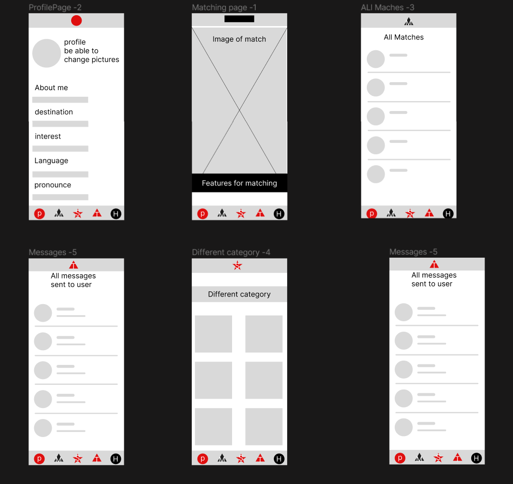
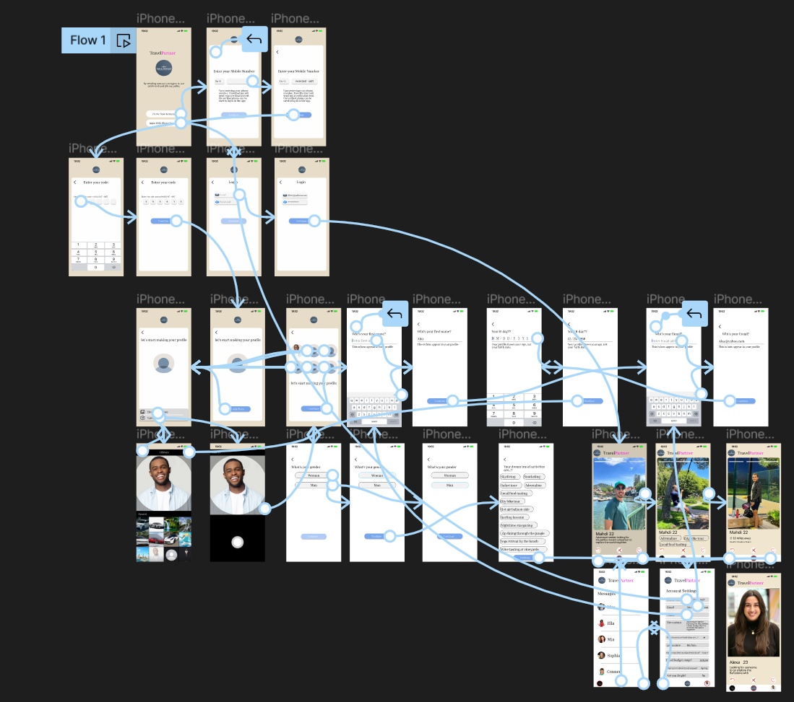
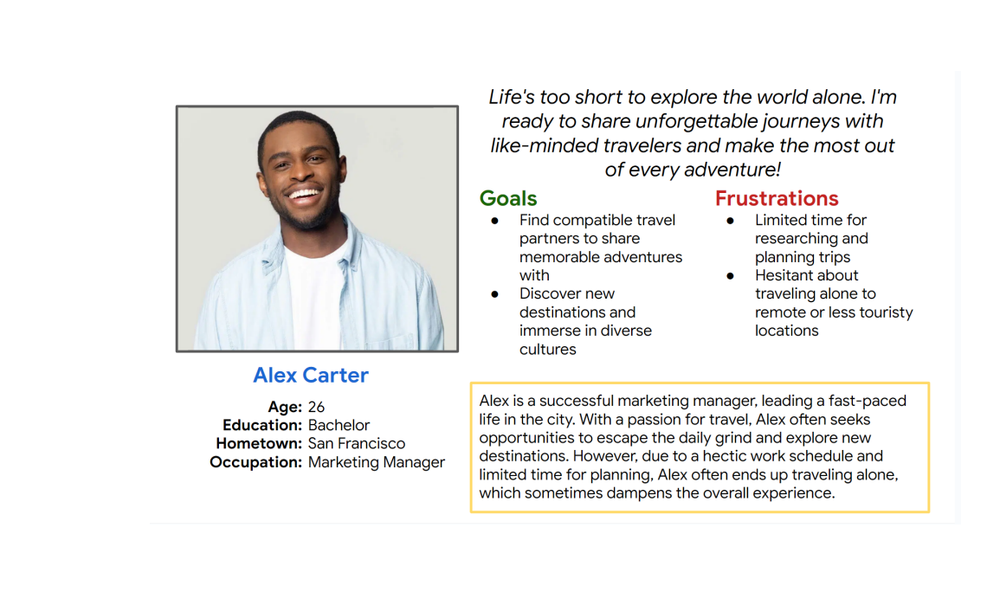
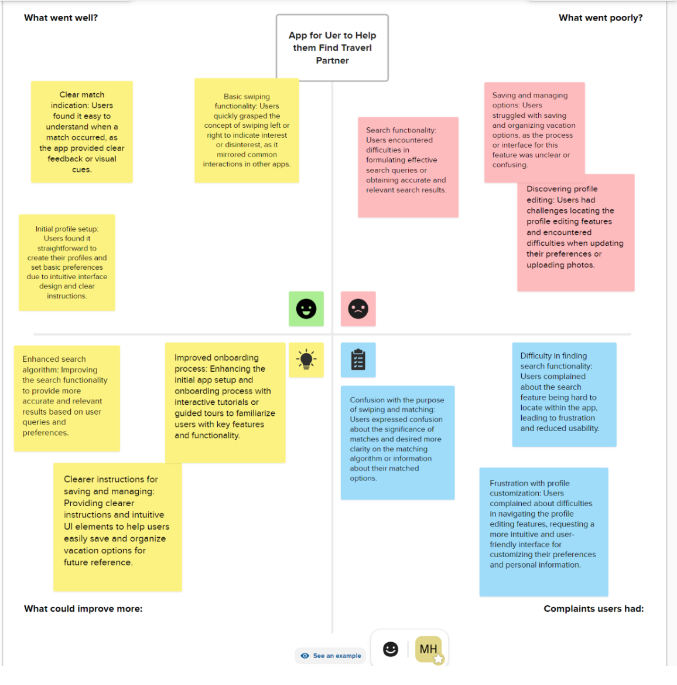
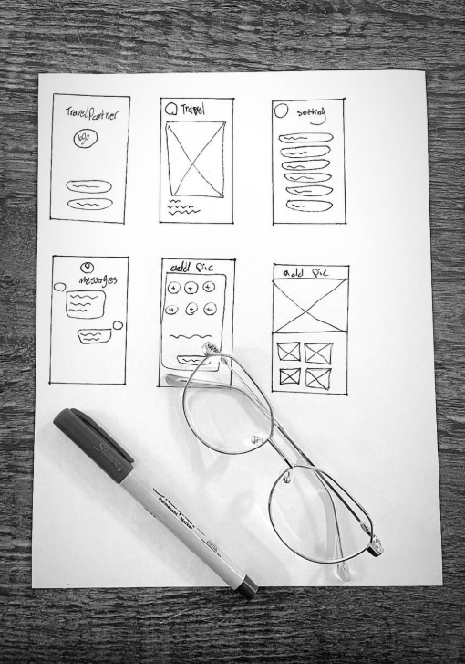
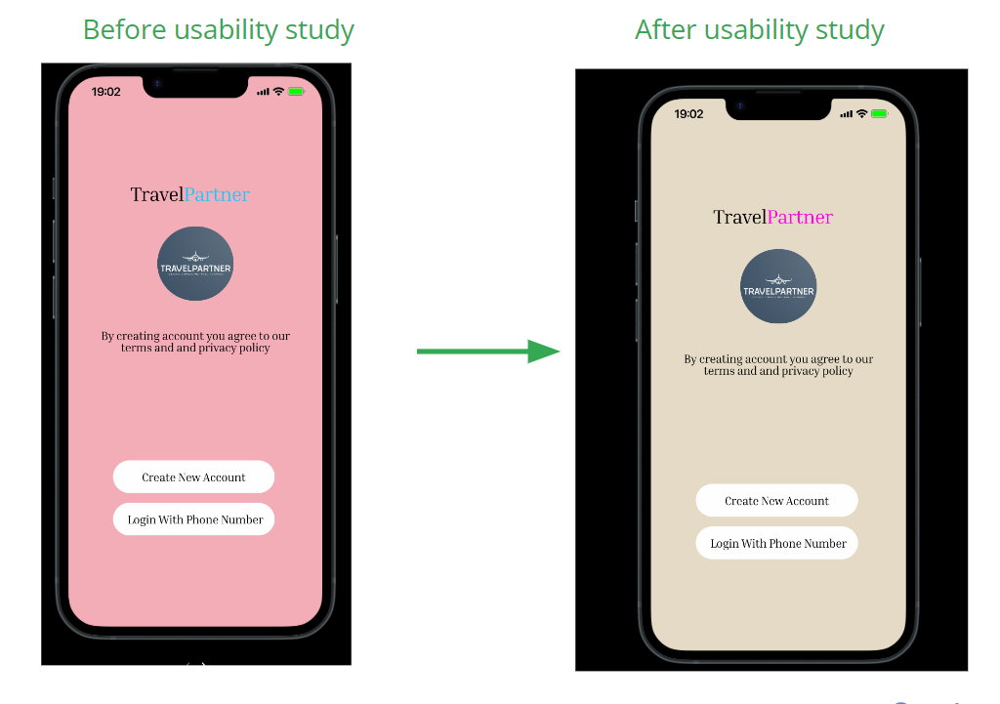
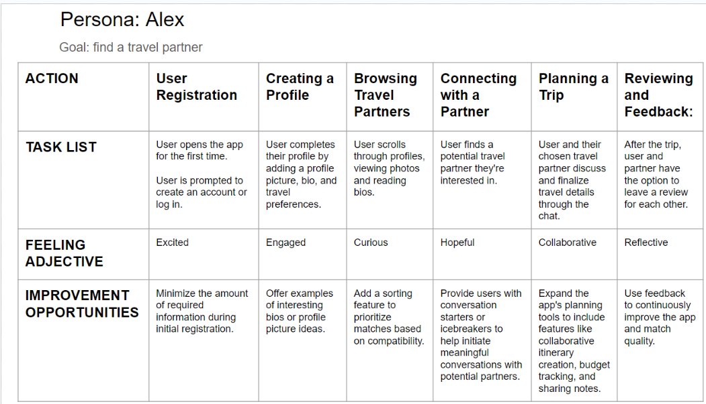

TravelPartner
Introduction/Overview
Embark on a journey of discovery with TravelPartner, my Google UX Design Professional Certificate project. As a passionate traveler and budding UX designer, I've channeled my enthusiasm into crafting a unique platform that redefines how we explore the world and forge meaningful connections.
My role: UX DesignerWhy TravelPartner?
- Foster Authentic Connections: Connect with fellow wanderers who share your zest for exploration.
- Elevate Your Travel Experience: Unlock innovative solutions that enhance every aspect of your journey.
- Cultivate Lasting Memories: Create unforgettable moments with like-minded adventurers.
- Answer to Wanderlust: Meet the demand for a platform that connects travel enthusiasts seeking companionship.
Join me as I unveil the story behind TravelPartner and showcase the design prowess honed through the Google UX Design Professional Certificate program. Together, let's reshape the way we travel and build connections that span the globe.
UX Design Process
- User Research and Analysis:
- Persona Building and Affinity Mapping:
-
Wireframing:
With a clear understanding of user requirements, I translated ideas into tangible solutions through wireframes and low-fidelity prototypes. This stage involved iterative design processes, exploring various layout options and information hierarchies. Emphasizing simplicity and ease of use, the low-fidelity prototypes allowed me to quickly gather feedback from users and stakeholders, ensuring that TravelPartner's core functionality was well-received. 
-
Prototyping and Iteration:
The transition from low-fidelity to high-fidelity prototypes marked the refinement of TravelPartner's visual identity. Applying a travel-inspired color palette and intuitive design elements, I crafted UI mockups that showcased the platform's engaging and inviting interface. Consistency and clarity were emphasized throughout to ensure seamless user interactions.
 -
User Testing:
Collaboration played a crucial role in TravelPartner's success. Engaging in open discussions with developers, product managers, and fellow designers, I incorporated valuable feedback and iteratively refined the user interface. To validate TravelPartner's effectiveness, I conducted user testing sessions, observing how participants navigated the platform and gauging their satisfaction. Insights from these tests allowed me to fine-tune the design, rectifying pain points, and optimizing the user experience.
At the outset of the TravelPartner project, I embarked on in-depth user research to gain a profound understanding of the pain points and aspirations of fellow travelers. Utilizing both quantitative and qualitative methods, I conducted surveys, interviews, and user feedback analysis to extract valuable insights. This research helped identify the key challenges travelers faced when searching for compatible travel partners and unveiled the need for a platform that fosters genuine connections among like-minded adventurers
Link to my Google UX Design Certificate Research Presentation: Research Presentation
Based on the research findings, I created detailed user personas representing different segments of travelers, each with distinct preferences and travel goals. These personas, such as "Solo Adventurer Alex" enabled me to empathize with users and tailor TravelPartner's features to cater to their unique needs and motivations.
 Affinity Diagram: Link to my Google UX Design Certificate Affinity Diagram: Affinity Diagram
User Research Methods
Interviews:
- Conducted in-depth one-on-one interviews with potential users
- Gained insights into user motivations, pain points, and aspirations
- Crafted interview questions to extract valuable user information
Surveys:
- Designed and distributed online surveys to a larger audience
- Uncovered trends, patterns, and preferences among users
- Collected statistical data and participants' thoughts
Contextual Inquiry:
- Observed users in natural environments while using similar apps
- Identified context of app use, pain points, and usability issues
- Gained insights through observing interactions and gestures
Usability Testing:
- Validated design concepts and identified usability challenges
- Invited participants to interact with app prototypes
- Uncovered navigation issues, confusing UI elements, and obstacles
Card Sorting:
- Used card sorting exercises to refine app's structure
- Participants organized app features for intuitive layout
- Identified user mental models and information preferences
Define the Problem
As part of the user experience design process for the travel partner app, my primary goal was to address the challenges that individuals often face when seeking travel companions for their journeys. While embarking on trips can be an exciting adventure, the process of finding suitable travel partners can be daunting and time-consuming.
Problem Statement:
Many individuals who wish to travel are hindered by the lack of a convenient and reliable platform to connect with like-minded travel partners. Existing solutions often fall short in providing an efficient and enjoyable way to find compatible companions, leading to frustration, missed opportunities, and potentially limiting travel experiences.
User Pain Points:
- Difficulty in finding individuals with similar travel preferences and interests
- Lack of a trustworthy platform to connect with potential travel companions
- Time-consuming and tedious process of searching for travel partners
- Uncertainty about the compatibility and reliability of potential partners
Ideation Steps to come up with a solution
As the sole designer of the travel partner app, I followed a systematic ideation process to generate and refine potential solutions for the identified problem. The following steps outline the process I undertook:
Step 1: User Research Insights
Reviewed insights gathered from user interviews, surveys, and contextual inquiries to gain a deep understanding of users' needs, preferences, and pain points related to finding travel companions.
Step 2: Brainstorming and Idea Generation
Individually conducted brainstorming sessions to explore a wide range of creative ideas inspired by the problem statement and user research findings.
Step 3: Concept Sketching
Used sketching and mind mapping techniques to visually represent potential app features, user interactions, and interfaces based on the generated ideas.
Step 4: Wireframing and Prototyping
Translated selected concepts into low-fidelity wireframes and interactive prototypes. Iteratively refined these prototypes based on my own design insights and user-centered principles.
Step 5: User Testing (Self-Guided)
Conducted self-guided usability testing sessions with the prototypes to simulate user interactions. Used the insights gained to identify usability issues and areas for improvement.
Step 6: Iterative Refinement
Continuously refined and iterated on the design based on insights gained from self-guided testing. Incorporated observed behaviors and interactions to enhance the app's usability and overall experience.
The ideation process was a crucial phase in ensuring that the travel partner app design effectively addressed users' needs and pain points, resulting in a solution that aims to provide a seamless and enjoyable travel companion-finding experience.
Test Solution and Iteration
-
Testing and Validation:
- Conducted extensive user testing sessions to gauge the impact and usability of the app.
- Encouraged users to interact with the prototype in realistic scenarios, providing feedback and sharing their experiences.
- Identified areas for improvement, validated design decisions, and addressed usability issues.
- Observed positive user reactions to the intuitive interface, streamlined donation process, and personalized support features.
- Received user appreciation for the transparency and security measures implemented in the app.
- Noticed that users appreciated the ability to articulate their needs clearly and connect with empathetic donors.
-
Iteration and Refinement:
- Iterated on the design based on user testing feedback and data analysis.
- Addressed identified pain points and areas for improvement.
- Refined the user interface, enhanced responsiveness, and implemented additional features.
- Continuously improved the app's usability, addressing user needs and aligning with evolving user expectations.
- Engaged in open communication with users, incorporating their suggestions and feedback to create a more robust and user-centric solution.
User journey Map:

-
Impact and Business Goals:
- Achieved significant business goals and user satisfaction.
- Noticed an increasing number of successful donations and positive feedback from users and donors.
- The app's intuitive design and personalized support features created a sense of trust.
- Resulted in higher engagement and repeat usage.
- Successfully addressed the problem faced by wildfire victims.
- Provided a user-friendly and secure platform that facilitated support, streamlined communication, and empowered individuals to rebuild their lives after devastating wildfires.
- Observed improved user engagement and outcomes after changing the website name from "goFireMe" to "RebuildFromAshes" based on user feedback.
My Overall Experience
Reflecting on my journey designing the travel partner app as part of the Google UX Certificate program, I am thrilled with the growth and insights I gained throughout the process. From concept to execution, every step has been an opportunity to enhance my skills and contribute to the world of user experience design.
To see the ultimate design, access the comprehensive Figma prototype by clicking here. Check out my design here!